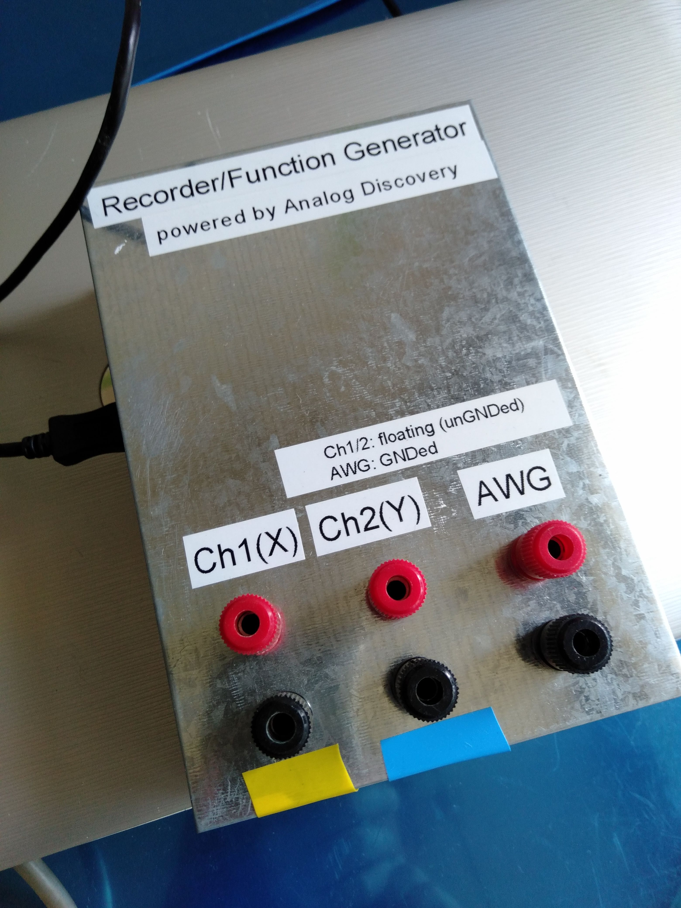
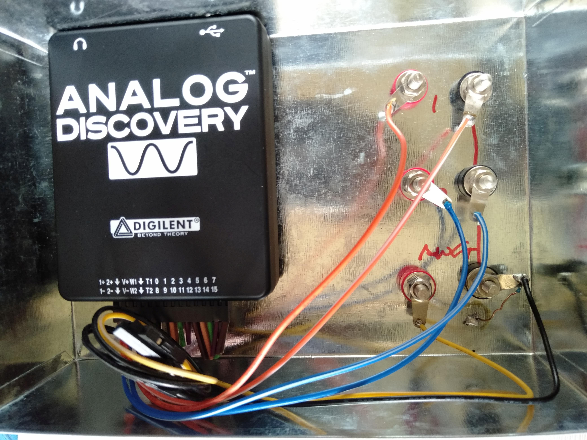
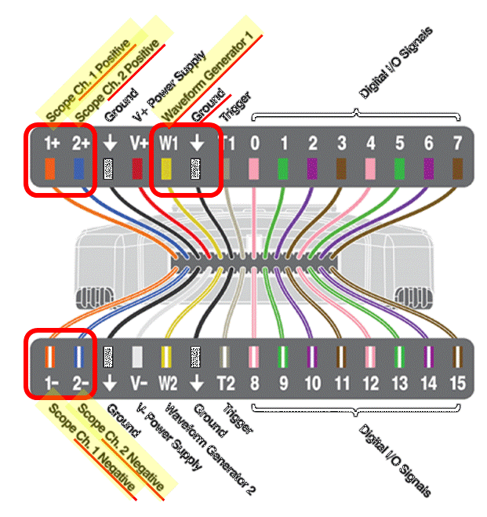
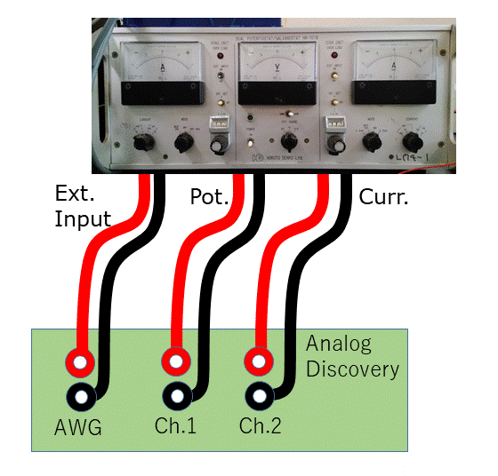

Analog Discovery本体もケース内部に固定するので，ケースにはUSBケーブル用の穴も空けておく必要がある (Fig. 2.1 では左側面)．
|  |  |
| Fig. 2.1 金属ケースに納めて端子を付ける． | Fig. 2.2 内部の接続例．端子につながっていないケーブルは途中で切断してある． |
本体のピン端子とケースのターミナルの接続には，付属ケーブルをそのまま流用するのが簡単である．ケースに取り付ける端子は，いわゆるバナナターミナルが使いやすいと思うが，BNC端子でもよい．単純に接続して差動入力にしておいた方が汎用性は高い．今回の目的には，1+，1-，2+，2-，W1，Ground の6本を残し，他のケーブルはショート等がおこらないように切断してしまうのが一番簡単である．Fig. 2.3 に40ピン端子のアサインメントを示すが，赤枠で囲った6箇所だけを使う．
|  |
|
Fig. 2.3 Analog Discovery の 30 ピン端子のアサインメント. 赤枠で囲ったところだけを使う. |
ポテンショスタットとの接続は Fig. 2.4 を参照．ポテンショスタットはアナログの制御信号入力端子，電位出力端子，電流出力端子がある，古典的なアナログポテンショスタットであれば，基本的に何でも使える．接続ケーブルは，使用する機器によって適切に選択する．なお，Analog Discovery の記録は 2ch なので，写真のようなバイポテンショスタットを使っても両方のユニットの記録をすることはできない．たとえば回転リング-ディスク電極法の記録はこのままではできない．
|  | |
| Fig. 2.4 ポテンショスタットとの接続． |